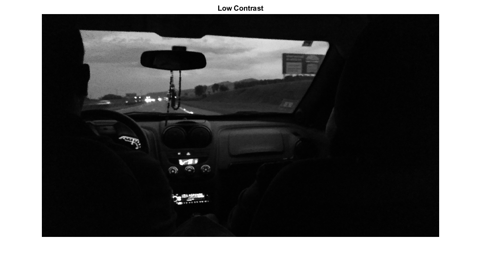
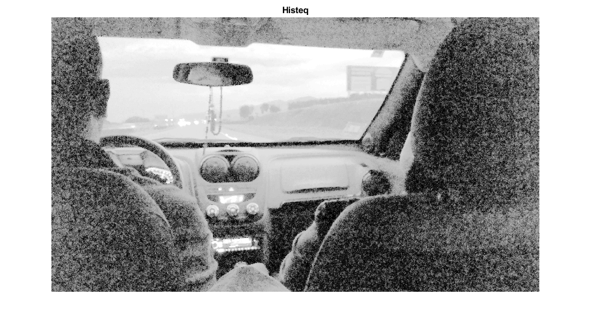
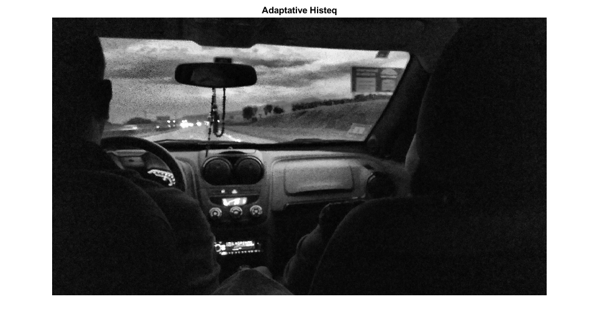

Contents
Read GIF Images
[img, map] = imread( 'week3\img1.gif', 1);
[back, map2] = imread( "week3\son2.gif", 1);
Convert to gray image
img2 = ind2gray(img, map);
back2 = ind2gray(back, map2);
Apply offset and get the difference between the images
back2 = back2 - 100;
imgfinal = img2 - back2;
Apply threshold
imgfinal2 = imbinarize(imgfinal, 'adaptive', 'ForegroundPolarity','dark','Sensitivity',0.5);
montage({img2, imgfinal, imgfinal2}, 'Size', [1 3]);
title("Original Image, enhanced image and image with threshold");

Add low contrast image
lowcontrastimg = rgb2gray(imread('week3\lowContrast.jpg'));
imshow(lowcontrastimg);
title("Low Contrast");

Apply imadjust
im_imadjust = imadjust(lowcontrastimg);
imshow(im_imadjust);
title("Imadjust");

Apply imadjust with gamma
im_imadjustgamma = imadjust(lowcontrastimg, [], [], 0.3);
imshow(im_imadjustgamma);
title("Imadjust with gamma correction");

Apply histeq
im_histeq = histeq(lowcontrastimg);
imshow(im_histeq);
title("Histeq");

Apply adapthisteq
im_adapthisteq = adapthisteq(lowcontrastimg);
imshow(im_adapthisteq);
title("Adaptative Histeq");

Comparison
montage({lowcontrastimg, im_imadjust, im_imadjustgamma, im_histeq, im_adapthisteq}, 'Size', [1 5]);
title("Original Image and Enhanced Images using imadjust, imadjust with gamma correction, histeq, and adapthisteq")